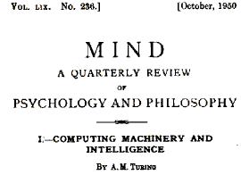

People began thinking about AI since the 1940s when Alan Turing, a famous mathematician who built the code cracking Enigma Machine in World War 2, wrote a paper on the thoughts of machines being able to copy human beings and the ability to do intelligent things and more importantly, to learn. In 1951, the proof of concept was included in Allen Newell, Cliff Shaw, and Herbert Simon’s, Logic Theorist. The Logic Theorist was a program designed to mimic the problem solving skills of a human and was funded by Research and Development (RAND) Corporation. It’s seen by many to be the first artificial intelligence program and was presented at the Dartmouth Summer Research Project on Artificial Intelligence (DSRPAI) hosted by John McCarthy and Marvin Minsky in 1956. In this historic talk, McCarthy, imagining a great group effort, brought together top researchers from different fields for an open discussion on artificial intelligence, the term which he came up with at the very event. Sadly, the talk fell short of McCarthy’s expectations; people came and went as they pleased, and there was failure to agree on standard methods for the field. Despite this, everyone whole-heartedly agreed with the feeling that AI was achievable. The significance of this event cannot be forgotten as it sped up the next twenty years of AI research.

The picture above is paper Alan Turing wrote on the thoughts of machines being able to copy human beings and the ability to do intelligent things.
For those of you who don't know who Alan Turing is, the picture above is him.